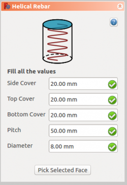

|
| Menu location |
|---|
| Arch → Rebar tools |
| Workbenches |
| Arch |
| Default shortcut |
| None |
| See also |
| Arch Rebar |
| This command is part of the Reinforcement AddOn, that you can install via menu Tools → Addons Manager |
Description
The Helical Rebar tool allows user to create a helical reinforcing bar in the structural element.
{kind=link}
{kind=link}
How to use
- Create a structure element
- Select any face of the structure
- Then select Helical Rebar from the rebar tools
- A task panel will pop-out on the left side of the screen as shown below 
- Select the desired orientation
- Give the inputs like front cover, right side cover, left side cover, bottom cover and diameter of the rebar
- Select the mode of distribution either amount or spacing
- If spacing is selected, a user can also opt for custom spacing
- Pick selected face is used to verify or change the face for rebar distribution
- Click OK or Apply to generate the rebars
- Click Cancel to exit the task panel
{kind=link}
Properties
- DATASide Cover: The distance between rebar to the curved face.
- DATATop Cover: The distance between rebar from the top face of the structure.
- DATABottom Cover: The distance between rebar from the bottom face of the structure.
- DATAPitch: The pitch of a helix is the height of one complete helix turn, measured parallel to the axis of the helix.
- DATADiameter: Diameter of the rebar.
Scripting
The Helical Rebar tool can by used in macros and from the python console by using the following function:
makeHelicalRebar(SideCover, BottomCover, Diameter, TopCover, Pitch, Structure, Facename)
- Adds a Straight reinforcing bar object to the given structural object.
- If no Structure and Facename is given, it will take user selected face as input.
- Here CoverAlong argument is having type tuple.
- Returns the new Rebar object.
Example:
Creating Helical rebar.
import Arch, Draft, HelicalRebar # Creating circle pl=FreeCAD.Placement() pl.Rotation.Q=(0.0,-0.0,-0.0,1.0) pl.Base=FreeCAD.Vector(-1.0,-1.0,0.0) circle = Draft.makeCircle(radius=130.107647738,placement=pl,face=True,support=None) Draft.autogroup(circle) # Creating Structure element from circle structure = Arch.makeStructure(circle) structure.ViewObject.Transparency = 80 FreeCAD.ActiveDocument.recompute() # Creating Helical rebar rebar = HelicalRebar.makeHelicalRebar(20, 50, 8, 50, 50, structure, "Face2")
Changing properties of Helical rebar.
import HelicalRebar HelicalRebar.editHelicalRebar(rebar, 20, 100, 12, 100, 100)